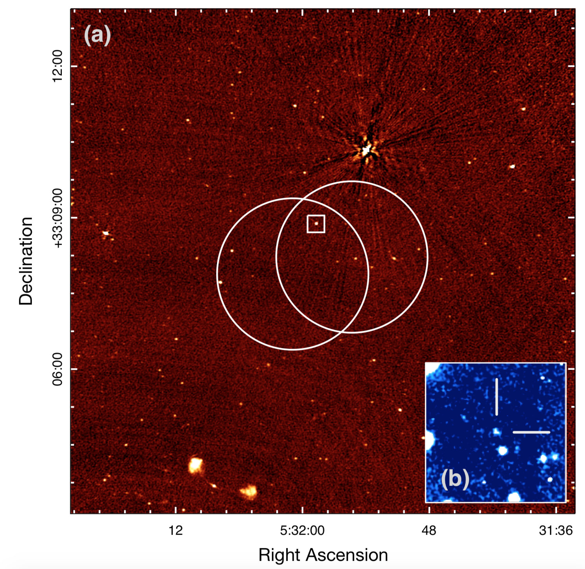

FRB 121102
Image from Chatterjee et al., 2017, Nature, 541, 58
Summary
- Detected by: Arecibo
- FRB coordinates (RA, Dec): 05:31:58.70 +33:08:52.5 (J2000)
- Host coordinates (RA, Dec): 05:31:58.70 +33:08:52.7 (J2000)
- Redshift: 0.1927
- Observed DM: 557 ± 2 pc cm-3
- Repeating: Yes
- References: 2016Natur.531..202S;
2017Natur.541...58C;
2017ApJ...834L...7T;
2017ApJ...843L...8B